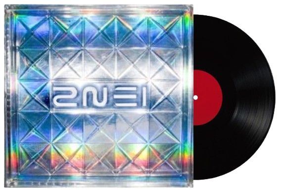
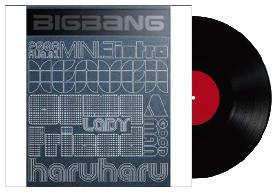
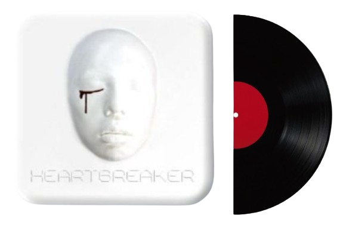
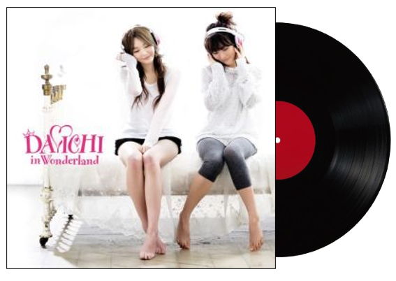
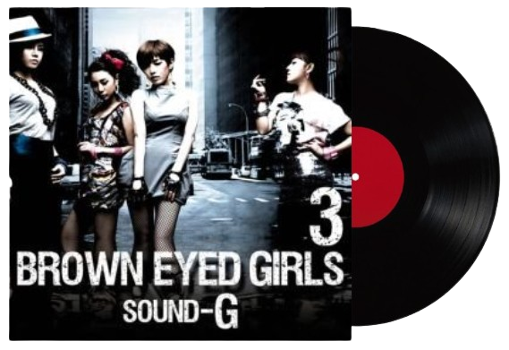
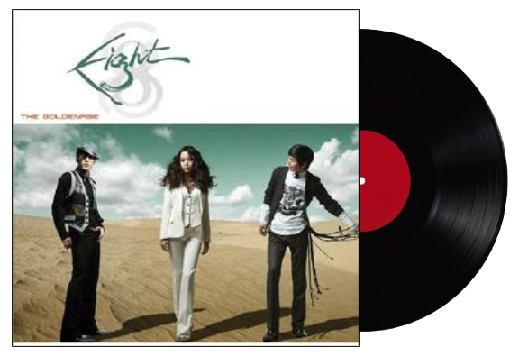
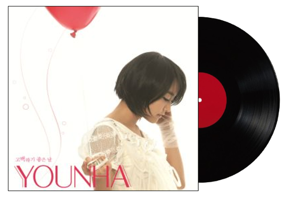
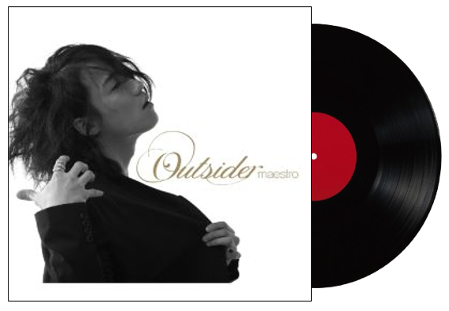

In The Club - 03:48
너의 향기를 지우려고 해
너의 손길 이제 잊으려고 해
왜 꼭 그래야만 했어
믿을 수가 없어
결국 그런 남자였어
나의 생활 이제 찾으려고 해
나의 친구 이제 만나려고 해
뻔한 거짓말을 했어
난 또 바보 처럼
아닐거라 안심했어
니가 다짐했던 약속 다 가져가줄래
사소한 습관까지 작은 기억까지 모두 태울테니까
내 안에 살아있는 널 잠재울거야
니가 여태 알던 내 모습은 이제 없는 거야
in the club 오늘밤 그에게
in the club 내 모든 걸 줄래
in the club 니가 그녀와 그랬던 것 처럼
in the club 쉽게 사랑할래
in the club 오늘밤 그에게
in the club 내 모든 걸 줄래
in the club 내 아픈 상처까지 안아도
오늘밤만은 너를 잊을 수 있도록
화려한 조명 속에 춤추는 모습이 보여
처음 본 여자 허리에 너의 손을 올려
시끄러운 클럽 난 더 크게 널 불러
아무것도 들리지도 보이지 않는 너
오늘 밤은 나도 너를 잠시동안 잊을래
내 책상 위에 너와의 사진 다 지울래
지긋지긋해 너에게 벗어나고 싶지만 왜
자꾸 널 기억하는지 i'm not okay
니가 다짐했던 약속 다 가져가줄래
사소한 습관까지 작은 기억까지 모두 태울테니까
내 안에 살아있는 널 잠재울거야
니가 여태 알던 내 모습은 이제 없는 거야
in the club 오늘밤 그에게
in the club 내 모든 걸 줄래
in the club 니가 그녀와 그랬던 것 처럼
in the club 쉽게 사랑할래
in the club 오늘밤 그에게
in the club 내 모든 걸 줄래
in the club 내 아픈 상처까지 안아도
오늘밤만은 너를 잊을 수 있도록
이 밤이 다 지나고나면 난
홀로 멍하니 남겨지겠지
바보같이 눈물을 흘리겠지
아직도 꿈 속에 니가 보여
이젠 널 놓겠어 다신 너도 나를 찾지말아
in the club 오늘밤 그에게
in the club 내 모든 걸 줄래
in the club 니가 그녀와 그랬던 것 처럼
in the club 쉽게 사랑할래
in the club 오늘밤 그에게
in the club 내 모든 걸 줄래
in the club 내 아픈 상처까지 안아도
오늘밤만은 너를 잊을 수 있도록
In The Club - 2NE1
×

떠나가
Yeah
Finally I realize
That I'm nothing without you
I was wrong forgive me
Ah, ah, ah, ah
Ah-ah-ah, ah, ah, ah, ah, ah
파도처럼 부숴진 내 맘
바람처럼 흔들리는 내 맘
연기처럼 사라진 내 사랑
문신처럼 지워지지 않아
한숨만 땅이 꺼지라 쉬죠 (oh, oh, oh, oh, oh)
가슴 속에 먼지만 쌓이죠 (say good bye)
Yeah 네가 없인 단 하루도 못 살 것만 같았던 나
생각과는 다르게도 그럭저럭 혼자 잘 살아
보고 싶다고 불러봐도 넌 아무 대답 없잖아
헛된 기대 걸어봐도 이젠 소용없잖아 (oh)
니 옆에 있는 그 사람이 뭔지, 혹시 널 울리진 않는지
그대 내가 보이긴 하는지, 벌써 싹 다 잊었는지
걱정돼 다가가기조차 말을 걸 수조차 없어 애태우고
나 홀로 밤을 지새우죠, 수백 번 지워내죠
돌아보지 말고 떠나가라
또 나를 찾지 말고 살아가라
너를 사랑했기에 후회 없기에
좋았던 기억만 가져가라
그럭저럭 참아볼 만해
그럭저럭 견뎌낼 만해
넌 그럴수록 행복해야 돼
하루하루 무뎌져 가네
Oh, girl, I cry, cry
You're my all, say good bye
길을 걷다 너와 나 우리 마주친다 해도
못 본 척하고서 그대로 가던 길 가줘
자꾸만 옛 생각이 떠오르면 아마도
나도 몰래 그댈 찾아갈지도 몰라
넌 늘 그 사람과 행복하게 (yeah)
넌 늘 내가 다른 맘 안 먹게 (right)
넌 늘 작은 미련도 안 남게끔 (oh)
잘 지내줘 나 보란 듯이
넌 늘 저 하늘같이 하얗게
뜬구름과도 같이 새파랗게
넌 늘 그래 그렇게 웃어줘
아무 일 없듯이
돌아보지 말고 떠나가라
또 나를 찾지 말고 살아가라
너를 사랑했기에 후회 없기에
좋았던 기억만 가져가라
그럭저럭 참아볼 만해
그럭저럭 견뎌낼 만해
넌 그럴수록 행복해야 돼
하루하루 무뎌져 가네-eh-eh-eh
나를 떠나서 맘 편해지길
나를 잊고서 살아가 줘
그 눈물은 다 마를 테니 yeah
하루하루 지나면
차라리 만나지 않았더라면 덜 아플 텐데 ooh
영원히 함께하자던 그 약속 이젠
추억에 묻어두길 바래 baby
널 위해 기도해 (돌아보지 말고 떠나가라)
또 나를 찾지 말고 살아가라 (날 찾지 말고서)
너를 사랑했기에 후회 없기에
좋았던 기억만 가져가라 (내 기억까지도)
그럭저럭 참아볼 만해 (참아볼 만해)
그럭저럭 견뎌낼 만해 (난 견뎌낼 만해)
넌 그럴수록 행복해야 돼 (oh)
하루하루 무뎌져 가네-eh-eh-eh
Oh, girl, I cry, cry
You're my all, say good bye-bye
Oh, my love, don't lie, lie
You're my heart, say good bye
하루 하루 - BIGBANG
×

Flo rider
YG family
G Dragon! holla at him
You're ma heartbreaker
DJ YG (be right back)
Let me take this over
Hey 나도 어디 가서 꿀리지 않아
사람 맘 갖고 저울질하지 마라
더 말할 것 없어 너와 나 벌써
떠나간 사랑인 줄 알면서 니 앞에서
꿇은 무릎 회수 매 순간이 thats who i hate, you
여기까지만 이제 안녕 또 안녕
Flo flo flo rider and G G G Dragon
내가 아무리 잡아도 눈물을 보여도
사랑한다는 거짓말은 참아줘
돌아선 남자의 가슴은 냉 버려진 여자의 머리는 휑
차가운 새벽 찬바람은 쌩
It's over you know what i mean
Low low low low low low low
Your my heart heart heart heart heartbreaker
내가 뭘 잘못했는지
Your my heart heart heart heart heartbreaker
No way no way
네가 날 떠나간대도
난 인정 못 한다고 잘 사나 보자고
Lovers and haters
지긋 지긋지긋해 삐끗삐끗삐끗 해
내 사랑이 비굴해?
No way
Flo rider
Hey I know everybody ain't perfect
Baby what did I do to deserve this
No way, you're making me nervous
I can't afford to be climbing your circus
Like why did I open curtain
Gave you my heart when I should've been certain
Knew I was allergic, I need a surgeon
Tryin' to be another person
This wasn't part of the plan
Leaving each other I don't understand
More than your lover, your permanent man
Won't be another that can do what I can
Right on the double I gave you my hand
But for the trouble why do it again
I cannot juggle just being your friend
After this trouble my heart needs a mend
(a mend a mend a mend)
Your my heart heart heart heart heartbreaker
내가 뭘 잘못했는지
Your my heart heart heart heart heartbreaker
No way no way
네가 날 떠나간대도
난 인정 못 한다고 잘 사나 보자고
Lovers and haters
지긋 지긋지긋해 삐끗삐끗삐끗 해
내 사랑을 비굴해 (talk to me, girl)
I'll still still be there (꺼진 네 전화기에)
I'll still still be there (네 집 앞 편지함에)
난 아직도 그댈 (이젠 남이라 해도)
I will still be there
Baby 그대 없이 죽을 것만 같아
네 앞에 보인 내 모습은 내가 아닌걸
미안해 나를 위해 다시 한번만
Take my hand 널 기다리고 있는데
Your my heart heart heart heart heartbreaker
내가 뭘 잘못했는지
Your my heart heart heart heart heartbreaker
No way no way
Your my heart heart
Heartbreaker
Your my heart heart heart
Breaker breaker
H(H)
E(E)
A(A)
R(R)
T(T)
Breaker
No way
I'm out
Heartbreaker - G.D
×

만나지 말잔 내 말 연락도 말란 내 말
너 진짜 그대로 할 거니 그게 아닌데
이대로 끝일까 봐 널 영영 잃을까 봐
점점 더 맘이 불안해져 너무 슬퍼져
정이 뭔지 밉다가도 그리워 너 없인 못 살아
Give me a call baby baby 지금 바로 전화 줘
Give me a call baby baby 매일 널 기다려
사랑한다고 사랑한다고 문자라도 남겨줘 Oh oh oh
날 울리지 마 너
어디서 뭘 하길래 얼마나 바쁘길래
혹시 너 일부러 안 받니 난 줄 알면서
벌써 날 잊은 거니 마음을 접은 거니
날 두고 네가 설마 설마 자꾸 눈물 나
정이 뭔지 사랑보다 무서워 지우기 힘들어
Give me a call baby baby 지금 바로 전화 줘
Give me a call baby baby 매일 널 기다려
사랑한다고 사랑한다고 문자라도 남겨줘 Oh oh oh
날 울리지 마 너
Call me Tell me Hold me 아니라고
Call me Tell me Hold me 가면 안 돼
Give me a call baby baby 다시 나를 찾아줘
Give me a call baby baby 할 말이 있는 걸
너를 사랑해 너무 사랑해 너를 향해 소리쳐 Oh oh oh
널 기다릴게 너
Call me Tell me Hold me 아니라고
Call me Tell me Hold me 돌아와 줘
8282 - 다비치
×

이러다 미쳐 내가, 여리여리 착하던 그런 내가
너 때문에 돌아 내가, 독한 나로 변해 내가
널 닮은 인형에다 주문을 또 걸어 내가
그녀와 찢어져 달라고, 고
Every night I'll be with you
Do you love her? Do you love her?
매일 너의 꿈속에
Do you love me? Do you love me?
Bring, bring 너를 내게 가져다줘
뭐라도 난 하겠어, 더한 것도 하겠어
빙빙 도는 나의 fantasy에
모든 걸 걸겠어, 널 내가 내가 갖겠어
못 참아 더는 내가, 이러다가 정신을 놓쳐 내가
도대체 왜 너란 애가 내 마음에 박혀 니가
찢겨진 사진에다 주문을 또 걸어 내가
그녀가 떨어져 달라고, 고
Every night I'll be with you
Do you love her? Do you love her?
매일 너의 꿈속에
Do you love me? Do you love me?
Bring, bring 너를 내게 가져다줘
뭐라도 난 하겠어, 더한 것도 하겠어
빙빙 도는 나의 fantasy에
모든 걸 걸겠어, 널 내가 내가 갖겠어
I'm in the voodoo lsland 널 되찾기 위한 plan
매일같이 이렇게 날 울린 널 향한 마지막 step
Yeah, yeah 그녀의 손을 잡고 그녀와 입을 맞추고
그런 너를 상상조차 하기 싫어
이 주문에 염원을 실어
랄랄랄랄랄라-랄랄랄라
랄랄랄랄랄라-랄랄랄라
랄랄랄라, 랄랄랄라
아브라카다브라, 다 이뤄져라
Let's go
Uh, uh-uh-uh
Haha, ha-ha-ha
Hey 네게 주문을 걸어 봐
I'm like a supervisor
널 통제하는 Kaiser
내게서 벗어날 수 없어 내게
Bring, bring 너를 내게 가져다줘
뭐라도 난 하겠어, 더한 것도 하겠어
빙빙 도는 나의 fantasy에
모든 걸 걸겠어, 널 내가 내가 갖겠어
이러다 미쳐 내가, 여리여리 착하던 그런 내가
너 때문에 돌아 내가, 독한 나로 변해 내가
Cool한 척하는 내가 놀라워라, 이런 내가
아닌 척 널 만나러 가 또, 또
Abracadabra - 브라운아이드걸스
×

아프다고 말하면 정말 아플 것 같아서
슬프다고 말하면 눈물이 날 것 같아서
그냥 웃지 그냥 웃지 그냥 웃지
그런데 사람들이 왜 우냐고 물어
매일을 울다가 웃다가 울다가 웃는걸 반복해
나 왜 이러는데
술이 술인지 밥인지도 모르는 채
살아 이 정도 아픔은 통과 의례인 듯 해
멍하니 종이에 나도 몰래
니 이름만 적어 하루 웬 종일
종이가 시커매지고서야 펜을 놔
너 그리워 또 핸드폰을 들었다 놔
눈물이 또 찾아와 너와의 이별이란
나는 심장이 없어 나는 심장이 없어
그래서 아픈 걸 느낄리 없어
매일 혼잣말을 해 내게 주문을 걸어
그래도 자꾸 눈물이 나는 걸
아프다고 말하면 정말 아플 것 같아서
슬프다고 말하면 눈물이 날 것 같아서
그냥 웃지 그냥 웃지 그냥 웃지
그런데 사람들이 왜 우냐고
물어 이렇게 웃는데
니가 떠나고부터 난 바보가 된 것 같어
i can't do 아무것도 죽어라
방구석에 박혀 살어
너 없인 할 일도 없는데 하룬 길어 너무 길어
근데 뭐 그리 바뻐 널 외롭게 했어
니가 쇼핑 가자 그럴 때
친구와 술 한잔 마시는 건 그렇게
쉬운데 왜 너한텐 못했을까
언제나 제일 느린 게 후회랬는데
정말 바본지 끝까지 너와의 끈을 놓지 못해
나는 심장이 없어 나는 심장이 없어
오늘도 뻔한 거짓말을 해
가슴이 넘 아픈데 이렇게 보채는데
어떻게 웃을 수가 있겠어
아프다고 말하면 정말 아플 것 같아서
슬프다고 말하면 눈물이 날 것 같아서
그냥 웃지 그냥 웃지 그냥 웃지
그런데 사람들이 왜 우냐고
물어 이렇게 웃는데
(웃자) TV속 연예인들처럼
(웃자) 너의 미니홈피 제목처럼
(웃자) 행복했던 내 어제처럼 (처럼..처럼..)
나는 심장이 없어 아플 수가 난 없어
나는 심장이 없어 아플 수가 난 없어
그냥 웃자 그냥 웃자 그냥 웃자
제발 좀 눈물아 이제는 멈춰줘
심장이 없어 - 에이트(8eight)
×

한 시간마다 보고 싶다고 감정 없이 말하지 말아
흔하게 널린 연애 지식은 통하지 않아
백 번을 넘게 사랑한다고 감동 없이 말하지 말아
잘 잡혀 가던 분위기마저 깨 버리잖아
여자는 생각보다 단순하지 않아
행복하게 만드는 방법도 조금씩은 달라
하루에 네 번 사랑을 말하고
여덟 번 웃고 여섯 번의 키스를 해 줘
날 열어주는 단 하나뿐인 비밀번호야
누구도 알 수 없게 너만이 나를 가질 수 있도록
You are my secret boy boy boy, boy boy boy
아무데서나 나타나지 마 항상 놀라지만은 않아
화장기 없는 얼굴 보이면 화도 나는 걸
남자는 여자만큼 섬세하지 않아
하고 싶은 대로만 한다면 다 된다고 믿어
하루에 네 번 사랑을 말하고
여덟 번 웃고 여섯 번의 키스를 해 줘
날 열어주는 단 하나뿐인 비밀번호야
누구도 알 수 없게 너만이 나를 가질 수 있도록
You are my secret boy boy boy, boy boy boy
어렵다고 포기하지 말아 줘
너 하나만 원하는 날 알아줘
바람둥이같은 남자들에게
여자들은 늘 속고 마는걸
날 애태우고 달랠 줄 아는 네가 되길 바라
하루에 네 번 사랑을 말하고
여덟 번 웃고 여섯 번의 키스를 해 줘
날 열어주는 단 하나뿐인 비밀번호야
누구도 알 수 없게 너만이 나를 가질 수 있도록
You are my secret boy boy boy, boy boy boy
비밀번호 486 - 윤하
×

상처를 치료해줄 사람 어디 없나
가만히 놔두다간 끊임없이 덧나
사랑도 사람도 너무나도 겁나
혼자인게 무서워 난 잊혀질까 두려워
상처를 치료해줄 사람 어디 없나
가만히 놔두다간 끊임없이 덧나
사랑도 사람도 너무나도 겁나
혼자인게 무서워 난 잊혀질까 두려워
언제나 외톨이 맘의 문을 닫고
슬픔을 등에 지고 살아가는 바보
두 눈을 감고 두 귀를 막고
캄캄한 어둠속에 내 자신을 가둬
365일 1년 내내
방황하는 내 영혼을 쫓아 키를 잡은 Jack Sparrow
몰아치는 Hurricane 졸라매는 허리끈에
방향감을 상실하고 길을 잃은 소리꾼
내 안에 숨어 있는 또 다른 나와 싸워
그녀가 떠나갈때 내게 말했었지
너는 곁에 있어도 있는 게 아닌것 같다고
만지면 베어버리는 칼날같은 사람
심장이 얼어붙은 차가웠던 사랑
그래, 1분 1초가 사는게 사는게 아냐
매일 매일이 너무나 두려워
M'aider 누가 날 좀 꺼내줘
언제나 외톨이 맘의 문을 닫고
슬픔을 등에 지고 살아가는 바보
두 눈을 감고 두 귀를 막고
캄캄한 어둠속에 내 자신을 가둬
언제나 외톨이 맘의 문을 닫고
슬픔을 등에 지고 살아가는 바보
두 눈을 감고 두 귀를 막고
캄캄한 어둠속에 내 자신을 가둬
아무도 모르게 다가온 이별에 대면했을때
또 다시 혼자가 되는게 두려워 외면했었네
꿈에도 그리던 지나간 시간이 다시금 내게로
되돌아오기를 바라며 간절한 맘으로 밤마다 기도했었네
시위를 당기고 내 손을 떠나간 추억의 화살이
머나먼 과녁을 향해서 한없이 빠르게 날아가
내게로 돌아와 달라고 내 손을 붙잡아 달라고
부르고 불러도 한없이 소리쳐 대봐도 아무런 대답이 없는 널
내 기억 속에서 너라는 사람의 존재를 완전히
지우려 끝없이 몸부림쳐 봐도
매일밤 꿈에서 그대가 나타나 흐르는 눈물을 닦아주는걸
나 어떡하라고 다 끄떡없다고
거짓말 하라고 더는 못 참겠다고
나도 아플 땐 아프다고 슬플땐 슬프다고
얼어 붙은 심장이 자꾸만 내게로 고자질해
정말로 끝이라고 정말로 괜찮다고
꾹 참고 참았던 눈물이 자꾸만 내게로 쏟아지네
상처를 치료해줄 사람 어디 없나
가만히 놔두다가 끊임없이 덧나
사랑도 사람도 너무나도 겁나
혼자인게 무서워 난 잊혀질까 두려워
상처를 치료해줄 사람 어디 없나
가만히 놔두다가 끊임없이 덧나
사랑도 사람도 너무나도 겁나
혼자인게 무서워 난 잊혀질까 두려워
언제나 외톨이 맘의 문을 닫고
슬픔을 등에 지고 살아가는 바보
두 눈을 감고 두 귀를 막고
캄캄한 어둠속에 내 자신을 가둬
언제나 외톨이 맘의 문을 닫고
슬픔을 등에 지고 살아가는 바보
두 눈을 감고 두 귀를 막고
캄캄한 어둠속에 내 자신을 가둬
외톨이 - 아웃사이더
×